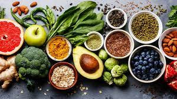

 Homemade food mean that you have complete control of what goes into your meals. Eating pre-prepared products, or takeout food, can often mean consuming lower-quality ingredients, which have been used purely for reasons of cost or convenience for the manufacturer or provider. Making meals yourself also enables you to avoid the numerous additives and preservatives that can go into food nowadays and instead, consume highly nutritional meals. Eating out all the time, ordering takeout food, or buying pre-prepared products can get expensive if you are doing it regularly. Buying the raw ingredients, such as vegetables, meat, pasta and rice, can work out much cheaper over time. This especially true if you are efficient in using the fresh food that you already have; for instance, if you have onions, mushrooms, and garlic in the fridge, you may want to find a recipe that includes these three ingredients. You can plan your meals so that they provide a balanced diet. Healthier foods can be maximized, while unhealthy ingredients can be minimized or missed out. Many commercially prepared foods contain excessive amounts of fat, sugar and salt, as well as unwelcome additives. When you cook at home, you control what your meals have in them. Commercially prepared products are often transported and stored. They contain preservatives and other ingredients to slow down the rate of deterioration in quality and taste. Fast food restaurants often have readymade food shipped in, which is then heated up on site. Making your own meals from scratch means that you can always cook with fresh ingredients, resulting in your food being both tastier and more nutritious.